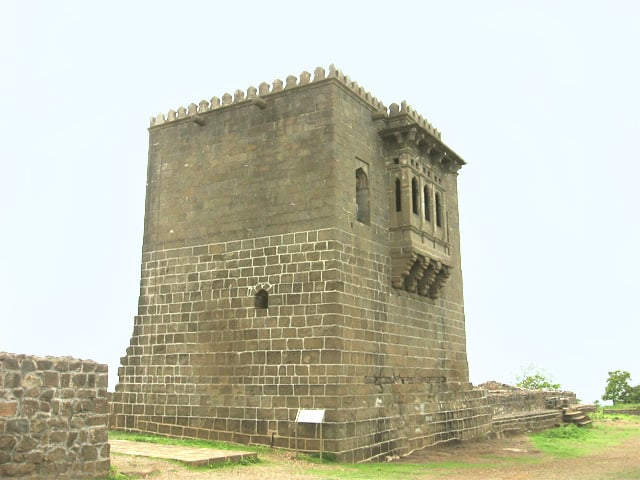

Shivneri Fort is a 17th-century military fortification located near Junnar in Pune district in Maharashtra, India. It is the birthplace of Chhatrapati Shivaji Maharaj, the founder of Maratha Empire.here are statues of Jijabai and young Shivaji inside the fort. At the centre of the fort is a water pond which is called ‘Badami Talav’. To the South of ‘Badami Talav’ are the statues Jijabai and a young Shivaji. In the fort there are two water springs, called Ganges and Yamuna, which have water throughout the year.
Shivneri got its name as it was under the possession of the Yadavas of Devagiri. This fort was mainly used to guard the old trading route from Desh to the port city of Kalyan. The place passed on to the Bahmani Sultanate after the weakening of Delhi Sultanate during the 15th century and it then passed on to the Ahmadnagar Sultanate in the 16th century. In 1595, a Maratha chief named Maloji Bhosale, the grandfather of Shivaji Maharaj Bhosale, was enobled by the Ahmadnagar Sultan, Bahadur Nizam Shah and he gave him Shivneri and Chakan. Shivaji Maharaj was born at the fort on 19 February 1630 (some accounts place it 1627), and spent his childhood there. Inside the fort is a small temple dedicated to goddess Shivai Devi,[2] after whom Shivaji was named. The English traveller Fraze visited the fort in 1673 and found it invincible. According to his accounts, the fort was well-stocked to feed thousand families for seven years.
more information